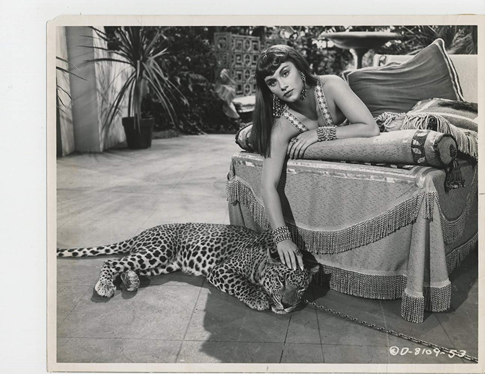

Films were shown once a day on weeknights and on Saturdays. On Sundays, the Metropole theatre was open for two Matinee showings at 10am and 2pm, as well as three showings at 4, 6 and 8pm. The film names and showing times were announced every few months via programmes which listed the titles and dates shown.
The Metropole theatre was also used as a town hall, and hosted various events such as concerts, Carnival balls, and receptions.
This was the first film ever shown on the panoramic screen at Metropole on its opening night in April 1954. Slaves of Babylon is a 1953 American Technicolor adventure film directed by William Castle and starring Richard Conte and Linda Christian.
In ancient times, a Jew is instrumental in the crowning of a new Median-Persian king who, in return, conquers Babylon and frees all the Jewish slaves.
